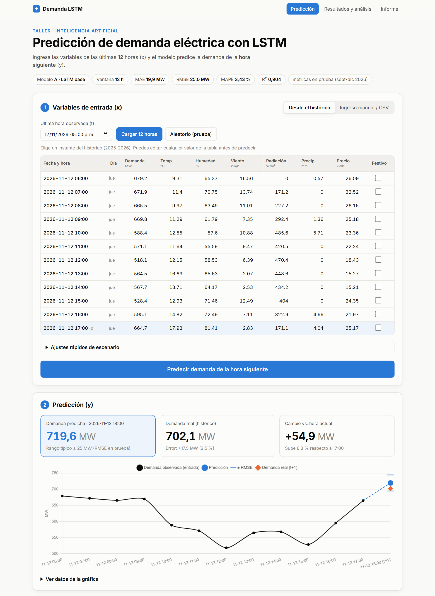

Informe de taller
Diseño de una arquitectura LSTM para predicción de demanda energética
Diseño, implementación, comparación y despliegue de redes neuronales LSTM para predecir la demanda eléctrica de la hora siguiente a partir de información histórica multivariada.
Johan David Delgado
Contenido
- 1. Introducción
- 2. Descripción del problema y del dataset
- 3. Calidad de los datos y reglas de limpieza
- 4. Análisis exploratorio
- 5. Metodología
- 6. Diseño de las arquitecturas
- 7. Entrenamiento
- 8. Resultados
- 9. Sobreajuste y generalización
- 10. Experimentos de control
- 11. Evidencia adicional
- 12. Preguntas de análisis
- 13. Despliegue
- 14. Conclusiones
- Referencias
1. Introducción
La planeación de la operación de un sistema eléctrico depende de anticipar cuánta energía se va a consumir. Una predicción precisa de la demanda de la próxima hora permite programar la generación, reducir costos de reserva y evitar desbalances. La demanda tiene una estructura temporal fuerte: depende de lo que ocurrió en las horas anteriores, del ciclo diario y semanal y de variables externas como el clima, el precio de la energía o los días festivos.
Este informe documenta el diseño, la implementación, la comparación y el despliegue de arquitecturas de redes neuronales recurrentes LSTM (Long Short-Term Memory) para predecir la demanda eléctrica de la hora siguiente a partir de una ventana de n horas consecutivas de información multivariada.
1.1 Objetivos
Objetivo general. Diseñar, implementar, comparar y justificar arquitecturas LSTM para predecir la demanda eléctrica de la siguiente hora a partir de información histórica multivariada.
Objetivos específicos.
- Auditar la calidad del dataset y definir reglas de limpieza justificadas que no inventen valores.
- Preparar los datos sin fuga de información futura: orden cronológico, separación cronológica en entrenamiento, validación y prueba, y normalización con parámetros calculados solo sobre entrenamiento.
- Diseñar tres arquitecturas (LSTM base, LSTM profunda y una propuesta propia) y evaluarlas con ventanas de 12, 24 y 48 horas.
- Evaluar con MAE, MSE, RMSE, MAPE y R², y analizar el sobreajuste y la capacidad de generalización.
- Responder las preguntas de análisis con evidencia experimental.
- Desplegar el modelo seleccionado en una aplicación web.
1.2 Recursos del proyecto
| Recurso | Ubicación |
|---|---|
| Repositorio (código, notebook, modelos) | https://github.com/Valery-Rosero/Red-Neuronal-App |
| Aplicación web desplegada | https://red-neuronal-app.vercel.app |
| Notebook con el desarrollo completo | Taller_LSTM.ipynb (en el repositorio) |
Todo el desarrollo se realizó en Python con TensorFlow/Keras, pandas, NumPy, scikit-learn y Matplotlib. Las cifras, tablas y figuras de este informe salen directamente de la ejecución del notebook.
2. Descripción del problema y del dataset
Problema. Dada una ventana de n horas consecutivas (con n ∈ {12, 24, 48}) que termina en la hora t, predecir la demanda de la hora t + 1.
Dataset. Archivo dataset_demanda_energia_LSTM_2025_2026.csv, con registros horarios del 1 de enero de 2025 al 31 de diciembre de 2026 (17 550 filas crudas, 15 columnas).
| Variable | Tipo | Descripción |
|---|---|---|
timestamp |
fecha-hora | Instante de la observación (resolución horaria) |
demanda_mw |
continua | Demanda eléctrica observada en la hora t (MW) |
temperatura_c |
continua | Temperatura (°C) |
humedad_pct |
continua | Humedad relativa (%) |
viento_kmh |
continua | Velocidad del viento (km/h) |
radiacion_wm2 |
continua | Radiación solar (W/m²) |
precipitacion_mm |
continua | Precipitación (mm) |
precio_kwh |
continua | Precio de la energía |
hora, dia_semana, mes |
calendario | Hora (0-23), día de la semana (0 = lunes) y mes (1-12) |
fin_semana, festivo |
binaria | Indicadores de fin de semana y día festivo |
periodo_dia |
texto | Madrugada, mañana, tarde o noche |
demanda_objetivo |
objetivo | Demanda de la hora t + 1 (lo que se predice) |
Se verificó que demanda_objetivo en la fila t coincide con demanda_mw en la fila t + 1 en el 99,8 % de las horas. Las diferencias aparecen solo donde demanda_mw tiene picos anómalos, lo que confirma que el objetivo es la demanda de la hora siguiente y que esos picos son errores de medición.
3. Calidad de los datos y reglas de limpieza
3.1 Problemas detectados
| Problema | Evidencia en el dataset |
|---|---|
| Desorden temporal | Las filas no están ordenadas por timestamp |
| Duplicados | 30 filas exactamente repetidas |
| Valores faltantes | 70 nulos en temperatura, humedad, viento y precio; 1 en el objetivo (la última hora) |
| Inconsistencias de texto | periodo_dia con 8 variantes: TARDE, Mañana, noche, etc. |
| Anomalías | Humedad hasta 129,7 %, viento y precio negativos, temperaturas de −23,5 °C y 54,7 °C, picos de demanda de hasta 1 776 MW cuando el objetivo nunca supera 927 MW |
3.2 Reglas de limpieza
El principio rector, exigido por el taller, es no inventar valores. Ningún dato se imputa, interpola ni "corrige": lo inválido se marca como faltante (NaN) y se excluye toda ventana que lo contenga.
| # | Regla | Justificación |
|---|---|---|
| R1 | Normalizar el texto de periodo_dia (quitar espacios y pasar a minúsculas) |
Son la misma categoría escrita distinto; se pasa de 8 a 4 valores |
| R2 | Eliminar los duplicados exactos | Repetir una observación la sobre-pondera y podría filtrar información entre conjuntos |
| R3 | Ordenar por timestamp antes de crear secuencias |
Una secuencia solo tiene sentido en orden temporal |
| R4 | Verificar que haya una fila por hora | Tras R2 y R3 la serie queda completa: 17 520 horas sin huecos |
| R5 | Valores fuera de rango físico → NaN |
Humedad ∈ [0, 100] %; viento, radiación, precipitación y precio ≥ 0; temperatura ∈ [−10, 45] °C. Fuera de esos límites son errores de sensor |
| R6 | demanda_mw fuera de [300, 1000] MW → NaN |
El objetivo, que está limpio, varía entre 314 y 927 MW; los picos de 1 100-1 776 MW no aparecen en él, así que son errores de medición |
| R7 | Descartar las ventanas que contengan algún NaN |
Evita imputar, a costa de perder algunas ventanas |
| R8 | Descartar la última fila (sin objetivo) | El 31-12-2026 a las 23:00 no tiene "hora siguiente" |
Con R5 y R6 se marcaron como inválidos 23 valores de demanda, 13 de temperatura, 9 de humedad, 14 de viento y 3 de precio. Ningún valor de radiación ni de precipitación quedó fuera de rango.

4. Análisis exploratorio

La demanda muestra un perfil diario muy marcado: mínimo en la madrugada y picos en la mañana y al final de la tarde. También baja los fines de semana y varía a lo largo del año.

Las variables más correlacionadas con la demanda de la hora siguiente son la demanda actual (r = 0,88), la radiación (r = −0,50), el fin de semana (r = −0,49), la temperatura (r = 0,48) y el precio (r = 0,30). Viento y precipitación casi no se relacionan con la demanda (|r| < 0,02).

La autocorrelación confirma la dependencia temporal y el ciclo de 24 horas, lo que justifica usar ventanas de varias horas y modelos con memoria.
5. Metodología
5.1 Variables de entrada
Cada hora de la ventana se describe con 15 variables:
- 7 continuas: demanda, temperatura, humedad, viento, radiación, precipitación y precio. La demanda pasada es una entrada legítima porque se conoce en el instante t.
- 6 cíclicas: hora, día de la semana y mes, cada una codificada como seno y coseno. Así las 23:00 quedan "cerca" de las 00:00 y diciembre cerca de enero, algo que una codificación numérica directa no logra.
- 2 binarias: fin de semana y festivo.
periodo_dia se limpió pero se excluyó del modelo, porque es una función exacta de hora y no aporta información nueva. demanda_objetivo nunca se usa como entrada.
5.2 Separación cronológica y normalización
Los datos se dividieron por orden temporal en proporción 70 / 15 / 15, sin train_test_split aleatorio:
| Conjunto | Periodo | Horas | Uso |
|---|---|---|---|
| Entrenamiento | 01-01-2025 00:00 → 26-05-2026 23:00 | 12 264 | Ajustar los pesos |
| Validación | 27-05-2026 00:00 → 13-09-2026 11:00 | 2 628 | Early Stopping y selección del modelo |
| Prueba | 13-09-2026 12:00 → 31-12-2026 23:00 | 2 628 | Evaluación final; no se usa para ninguna decisión |
La normalización z-score (media 0, desviación 1) usa la media y la desviación estándar calculadas únicamente sobre el conjunto de entrenamiento, y esos mismos parámetros se aplican a validación, prueba y a la aplicación web.
5.3 Construcción de las ventanas
Para cada hora t, la entrada es la matriz de las horas [t − n + 1, …, t] (n × 15) y el objetivo es la demanda de t + 1. Cada ventana se asigna al conjunto que corresponde a su hora t, de modo que ningún objetivo de validación o prueba se ve durante el entrenamiento. El notebook incluye comprobaciones automáticas (assert) de que no existe fuga temporal.
Tabla 1. Ventanas disponibles por conjunto después de descartar las que contienen valores inválidos.
| Ventana | Entrenamiento | Validación | Prueba |
|---|---|---|---|
| 12 h | 9 686 | 2 051 | 2 093 |
| 24 h | 7 526 | 1 605 | 1 664 |
| 48 h | 4 504 | 964 | 1 042 |
| Conjunto común (válidas para 48 h) | 4 504 | 964 | 1 042 |
Cada valor inválido elimina las n ventanas que lo contienen, por eso la ventana de 48 h conserva menos muestras. Para comparar las ventanas de forma justa, la evaluación principal usa un conjunto común de prueba: los 1 042 instantes válidos para la ventana de 48 h, que también son válidos para 12 y 24 h.
5.4 Cumplimiento de las condiciones del taller
| Condición del taller | Cómo se cumplió |
|---|---|
| No utilizar información futura como entrada | La entrada solo contiene las horas [t − n + 1, …, t]; el objetivo (t + 1) se excluye; hay verificaciones automáticas |
| Ordenar cronológicamente antes de crear secuencias | Regla R3, aplicada antes de construir cualquier ventana |
| Separar entrenamiento, validación y prueba cronológicamente | Cortes por fecha 70/15/15 (sección 5.2) |
No utilizar train_test_split aleatorio |
La división se hace por índice temporal |
| Justificar las reglas de limpieza | Reglas R1-R8 con su justificación (sección 3.2) |
| No inventar valores para corregir anomalías | Lo inválido pasa a NaN y se descarta la ventana; la app web aplica la misma regla |
| Normalizar solo con parámetros de entrenamiento | Media y desviación calculadas sobre entrenamiento (sección 5.2) |
| Comparar mínimo tres arquitecturas LSTM | A (LSTM base), B (LSTM profunda) y C (CNN-LSTM) |
| Experimentar con ventanas de 12, 24 y 48 h | 3 arquitecturas × 3 ventanas = 9 modelos |
| Evaluar con MAE, MSE, RMSE y R² | Se reportan además MAPE y épocas (sección 8) |
| Analizar sobreajuste y generalización | Sección 9 y experimentos de control (sección 10) |
| Gráficas: loss, real vs. predicha, error y comparación | Figuras de las secciones 7 y 8 |
| Desplegar el modelo en una app web | https://red-neuronal-app.vercel.app (sección 13) |
6. Diseño de las arquitecturas
| Arquitectura | Capas | Parámetros | Justificación | |
|---|---|---|---|---|
| A | LSTM base | LSTM(32) → Dense(1) |
6 177 | Línea de referencia: la red recurrente más simple. Si un modelo más complejo no la supera, su complejidad no se justifica |
| B | LSTM profunda | LSTM(64) → Dropout(0,2) → LSTM(32) → Dropout(0,2) → Dense(16, ReLU) → Dense(1) |
33 441 | Dos capas apiladas aprenden representaciones jerárquicas: patrones horarios en la primera y tendencias más lentas en la segunda. El Dropout controla el sobreajuste que trae la mayor capacidad |
| C | CNN-LSTM (propuesta del grupo) | Conv1D(32, k = 3, causal) → LSTM(48) → Dropout(0,2) → Dense(16, ReLU) → Dense(1) |
17 825 | La convolución detecta patrones locales (rampas de pocas horas, cambios de radiación o temperatura) y filtra ruido antes de la LSTM, que modela la dependencia larga. Es causal: cada paso solo ve horas anteriores |
Los parámetros corresponden a la ventana de 24 h; en una LSTM el número de parámetros no depende de la longitud de la ventana.
Configuración común de entrenamiento, idéntica para todos los modelos para que la comparación sea justa:
- Pérdida: error cuadrático medio (MSE). Optimizador: Adam con tasa de aprendizaje inicial de 0,001.
- Tamaño de lote: 64. Máximo de épocas: 80.
- Early Stopping sobre la pérdida de validación, con paciencia de 10 épocas y restauración de los mejores pesos.
- ReduceLROnPlateau: reduce la tasa de aprendizaje a la mitad si la validación no mejora en 4 épocas.
- Semilla aleatoria fija (42) para que los resultados sean reproducibles.
7. Entrenamiento

Tabla 2. Épocas de entrenamiento de cada modelo. Early Stopping detiene el entrenamiento 10 épocas después de la mejor y restaura los pesos de esa época.
| Modelo | Ventana | Épocas ejecutadas | Mejor época | MSE validación* | Tiempo (s) |
|---|---|---|---|---|---|
| A · LSTM base | 12 h | 60 | 50 | 0,0689 | 50 |
| A · LSTM base | 24 h | 45 | 35 | 0,0725 | 45 |
| A · LSTM base | 48 h | 55 | 45 | 0,0737 | 59 |
| B · LSTM profunda | 12 h | 54 | 44 | 0,0695 | 106 |
| B · LSTM profunda | 24 h | 42 | 32 | 0,0740 | 99 |
| B · LSTM profunda | 48 h | 55 | 45 | 0,0765 | 137 |
| C · CNN-LSTM | 12 h | 56 | 46 | 0,0710 | 65 |
| C · CNN-LSTM | 24 h | 66 | 56 | 0,0743 | 90 |
| C · CNN-LSTM | 48 h | 51 | 41 | 0,0759 | 72 |
* MSE sobre datos normalizados en la mejor época. Tiempo en CPU.
Todos los modelos convergen en 42-66 épocas, sin llegar al máximo de 80. La arquitectura A, que no tiene Dropout, es la única donde la pérdida de entrenamiento sigue bajando mientras la de validación se estabiliza: es un sobreajuste leve. En B y C la pérdida de validación queda igual o por debajo de la de entrenamiento. No es un error: el Dropout solo está activo al calcular la pérdida de entrenamiento y se desactiva al validar.
8. Resultados
8.1 Métricas
- MAE: media del valor absoluto de (real − predicho). Es el error típico en MW.
- MSE: media de (real − predicho)². Penaliza más los errores grandes.
- RMSE: raíz cuadrada del MSE, expresada en MW.
- MAPE: error absoluto relativo medio, en porcentaje.
- R²: fracción de la variabilidad de la demanda que explica el modelo (1 = perfecto).
8.2 Tabla de resultados
Tabla 3. Resultados sobre el conjunto común de prueba (1 042 instantes entre el 26-09-2026 y el 31-12-2026), en MW. La persistencia (predecir que la próxima hora será igual a la actual) se incluye como referencia.
| Modelo | Ventana | MAE | MSE | RMSE | MAPE | R² | Épocas |
|---|---|---|---|---|---|---|---|
| A · LSTM base ✓ | 12 h | 19,86 | 624,6 | 24,99 | 3,43 % | 0,9037 | 60 |
| A · LSTM base | 24 h | 20,12 | 652,6 | 25,55 | 3,47 % | 0,8994 | 45 |
| A · LSTM base | 48 h | 21,06 | 718,4 | 26,80 | 3,63 % | 0,8893 | 55 |
| B · LSTM profunda | 12 h | 19,43 | 613,5 | 24,77 | 3,37 % | 0,9054 | 54 |
| B · LSTM profunda | 24 h | 20,05 | 659,7 | 25,69 | 3,47 % | 0,8983 | 42 |
| B · LSTM profunda | 48 h | 20,68 | 681,4 | 26,10 | 3,58 % | 0,8950 | 55 |
| C · CNN-LSTM | 12 h | 19,75 | 641,8 | 25,33 | 3,42 % | 0,9011 | 56 |
| C · CNN-LSTM | 24 h | 19,86 | 650,8 | 25,51 | 3,43 % | 0,8997 | 66 |
| C · CNN-LSTM | 48 h | 21,28 | 744,6 | 27,29 | 3,68 % | 0,8852 | 51 |
| Persistencia (referencia) | – | 35,50 | 1 963,3 | 44,31 | 6,07 % | 0,6974 | – |
✓ Modelo seleccionado por validación. MAE, MSE y RMSE en MW (MSE en MW²).
- Los 9 modelos superan ampliamente a la persistencia: RMSE de 24,8-27,3 MW frente a 44,3 MW (entre 38 % y 44 % menos error) y R² de 0,89-0,91 frente a 0,70.
- La ventana de 12 h es la mejor en las tres arquitecturas y la de 48 h la peor.
- Las diferencias entre arquitecturas son pequeñas (≤ 0,6 MW de RMSE con la misma ventana), menores que el efecto de cambiar la ventana.

8.3 Selección del modelo
El modelo final se eligió con el RMSE de validación (también sobre instantes comunes), no con el de prueba. Elegir mirando el conjunto de prueba lo convertiría en otro conjunto de ajuste y la estimación del error dejaría de ser honesta. El modelo seleccionado es A · LSTM base con ventana de 12 h (RMSE de validación de 25,26 MW, el menor de los nueve). En prueba obtiene MAE = 19,86 MW, RMSE = 24,99 MW, MAPE = 3,43 % y R² = 0,904.
8.4 Demanda real vs. predicha


El modelo sigue con precisión el ciclo diario, incluidas las subidas de la mañana y la tarde y los valles nocturnos. Las tres arquitecturas producen curvas casi superpuestas.
8.5 Error de predicción

El error está centrado en cero (sesgo medio de −0,7 MW), es decir, el modelo no sobrestima ni subestima de forma sistemática. Su distribución es aproximadamente simétrica: el 68,9 % de las horas tiene un error absoluto menor de 25 MW y el percentil 95 es de 49 MW. No hay una franja horaria con errores sistemáticamente mayores.
9. Sobreajuste y generalización
Tabla 4. RMSE (MW) de cada modelo en entrenamiento, validación y prueba, y cociente prueba/entrenamiento.
| Modelo | Ventana | RMSE entren. | RMSE valid. | RMSE prueba | Prueba / entren. |
|---|---|---|---|---|---|
| A · LSTM base | 12 h | 23,32 | 25,43 | 25,01 | 1,07 |
| A · LSTM base | 24 h | 24,08 | 26,08 | 25,71 | 1,07 |
| A · LSTM base | 48 h | 23,96 | 26,31 | 26,80 | 1,12 |
| B · LSTM profunda | 12 h | 23,95 | 25,53 | 24,74 | 1,03 |
| B · LSTM profunda | 24 h | 24,92 | 26,36 | 25,78 | 1,03 |
| B · LSTM profunda | 48 h | 24,46 | 26,81 | 26,10 | 1,07 |
| C · CNN-LSTM | 12 h | 23,95 | 25,81 | 25,03 | 1,04 |
| C · CNN-LSTM | 24 h | 24,12 | 26,41 | 25,83 | 1,07 |
| C · CNN-LSTM | 48 h | 24,45 | 26,70 | 27,29 | 1,12 |

El cociente entre el RMSE de prueba y el de entrenamiento está entre 1,03 y 1,12: el error fuera de la muestra es solo 3-12 % mayor que dentro. Por tanto, no hay sobreajuste relevante y los modelos generalizan a un periodo (septiembre-diciembre de 2026) que nunca vieron. Los modelos con Dropout (B y C) tienen las brechas más bajas, y las ventanas de 48 h las más altas, porque tienen menos muestras para la misma cantidad de parámetros. Validación y prueba quedan muy cerca, señal de que la validación fue un buen criterio para seleccionar el modelo.
10. Experimentos de control
Para responder con evidencia las preguntas sobre Dropout, Early Stopping y número de neuronas, se entrenaron variantes con la ventana de 12 h cambiando un solo factor a la vez.
Tabla 5. Experimentos de control (ventana de 12 h). RMSE en MW.
| Variante | Parám. | Épocas | RMSE entren. | RMSE prueba | R² prueba | Brecha* |
|---|---|---|---|---|---|---|
| A con 32 neuronas + Early Stopping (referencia) | 6 177 | 60 | 23,32 | 25,01 | 0,9076 | 1,69 |
| B con Dropout 0.2 (referencia) | 33 441 | 54 | 23,95 | 24,74 | 0,9096 | 0,79 |
| B sin Dropout | 33 441 | 41 | 23,23 | 25,26 | 0,9058 | 2,03 |
| A sin Early Stopping | 6 177 | 150 | 21,08 | 28,87 | 0,8769 | 7,79 |
| A con 8 neuronas | 777 | 80 | 24,80 | 25,22 | 0,9061 | 0,42 |
| A con 128 neuronas | 73 857 | 41 | 22,88 | 24,92 | 0,9083 | 2,04 |
* Brecha = RMSE de prueba − RMSE de entrenamiento (MW).

- Sin Early Stopping (150 épocas fijas): la pérdida de validación empieza a subir alrededor de la época 35 mientras la de entrenamiento sigue bajando. El RMSE de prueba empeora de 25,0 a 28,9 MW (+15 %). Es un caso claro de sobreajuste.
- Sin Dropout (arquitectura B): la brecha entre prueba y entrenamiento pasa de 0,8 a 2,0 MW y el RMSE de prueba sube de 24,7 a 25,3 MW.
- Número de neuronas: con 8 neuronas (777 parámetros) el RMSE de prueba es 25,2 MW; con 32, 25,0 MW; con 128 (73 857 parámetros, 95 veces más), 24,9 MW. Multiplicar los parámetros casi no mejora el resultado y amplía la brecha de generalización.
11. Evidencia adicional
11.1 Comparación con modelos de referencia
Tabla 6. LSTM frente a la persistencia y a una regresión lineal (Ridge) que recibe exactamente la misma ventana de 12 h (180 entradas), sobre el conjunto común de prueba.
| Modelo | MAE | MSE | RMSE | MAPE | R² |
|---|---|---|---|---|---|
| Persistencia | 35,50 | 1 963,3 | 44,31 | 6,07 % | 0,6974 |
| Regresión lineal (Ridge, 12 h) | 22,53 | 874,2 | 29,57 | 3,90 % | 0,8652 |
| LSTM A (12 h) | 19,86 | 624,6 | 24,99 | 3,43 % | 0,9037 |
La LSTM reduce el RMSE un 15 % frente a la regresión lineal y un 44 % frente a la persistencia. Esa diferencia con el modelo lineal es lo que aportan la memoria y la no linealidad de la red.
11.2 Importancia de las variables
Se midió la importancia por permutación: se desordenan los valores de una variable entre las muestras de prueba y se observa cuánto aumenta el RMSE del modelo seleccionado.

11.3 Dónde se equivoca más el modelo
Tabla 7. Error absoluto medio del modelo seleccionado según el tipo de día que se predice.
| Hora predicha | MAE (MW) | Horas en prueba |
|---|---|---|
| Festivo | 34,84 | 38 |
| No festivo | 19,64 | 2 055 |
| Fin de semana | 20,01 | 621 |
| Día laboral | 19,87 | 1 472 |
12. Preguntas de análisis
12.1 ¿Por qué LSTM es apropiada para este problema?
La demanda eléctrica es una serie temporal: el valor de la próxima hora depende de lo que ocurrió en las horas anteriores (inercia del consumo, rampas de la mañana y la tarde, ciclo diario). Una red densa trata cada entrada como independiente y no tiene noción de orden. Una RNN simple sí la tiene, pero sufre de desvanecimiento del gradiente y "olvida" lo ocurrido hace muchas horas.
La LSTM resuelve este problema con una celda de memoria controlada por tres compuertas:
- la de olvido, que decide qué información descartar;
- la de entrada, que decide qué información nueva incorporar;
- la de salida, que decide qué exponer en cada paso.
Además:
- acepta entradas multivariadas (demanda, clima, precio y calendario a la vez) y aprende relaciones no lineales entre ellas;
- lee la ventana en orden, así que puede usar la forma de la curva reciente (si viene subiendo o bajando) y no solo su nivel.
La evidencia lo confirma (sección 11.1): con la misma ventana, la LSTM obtiene un RMSE de 25,0 MW, frente a 29,6 MW de una regresión lineal y 44,3 MW de la persistencia.
12.2 ¿Qué efecto tiene cambiar la ventana temporal?
En las tres arquitecturas, la ventana de 12 h fue la mejor y la de 48 h la peor:
| Arquitectura | RMSE 12 h | RMSE 24 h | RMSE 48 h |
|---|---|---|---|
| A | 25,0 MW | 25,5 MW | 26,8 MW |
| B | 24,8 MW | 25,7 MW | 26,1 MW |
| C | 25,3 MW | 25,5 MW | 27,3 MW |
Hay un compromiso:
- Ventana más larga: da más contexto, pero implica más entradas, un gradiente que debe propagarse por más pasos y menos muestras de entrenamiento (9 686 con 12 h frente a 4 504 con 48 h, por las ventanas descartadas). El resultado es peor generalización: el cociente prueba/entrenamiento sube de 1,07 a 1,12 en A y C.
- Ventana más corta: da menos contexto, pero aquí no hace falta más. El ciclo diario ya llega al modelo mediante la codificación cíclica de la hora y el día, y el nivel actual de la demanda está en las últimas horas.
Una ventana demasiado corta perdería la tendencia reciente. La longitud óptima depende del problema y debe elegirse con validación, como se hizo aquí.
12.3 ¿Existe sobreajuste?
No hay sobreajuste relevante en los modelos finales:
- El RMSE de prueba es apenas 3-12 % mayor que el de entrenamiento (sección 9).
- Las curvas de validación se estabilizan sin la "U" característica del sobreajuste.
- La arquitectura A, sin regularización, muestra solo una brecha pequeña y controlada.
El riesgo existía: la misma arquitectura A entrenada 150 épocas sin Early Stopping sí sobreajusta. Su RMSE de entrenamiento baja a 21,1 MW, pero el de prueba sube a 28,9 MW. El sobreajuste se evitó gracias a las decisiones de entrenamiento.
12.4 ¿Qué es y qué efecto tiene Dropout?
Dropout es una técnica de regularización que, durante el entrenamiento, apaga aleatoriamente una fracción p de las neuronas en cada paso (aquí p = 0,2) y escala las restantes para compensar. Al predecir se desactiva y se usa la red completa. Sus efectos son:
- evita que las neuronas dependan de otras específicas (co-adaptación) y obliga a aprender representaciones redundantes y robustas;
- equivale a entrenar un conjunto de muchas subredes que comparten pesos y promediarlas al predecir;
- reduce el sobreajuste, a cambio de un entrenamiento algo más lento y ruidoso.
En el experimento de control, quitar el Dropout de la arquitectura B amplió la brecha entre prueba y entrenamiento de 0,8 a 2,0 MW y empeoró el RMSE de prueba (24,7 → 25,3 MW). También explica por qué en B y C la pérdida de validación queda por debajo de la de entrenamiento.
12.5 ¿Qué es y qué efecto tiene Early Stopping?
Early Stopping vigila una métrica de validación (aquí la pérdida) y detiene el entrenamiento cuando deja de mejorar durante un número de épocas (paciencia = 10). Con la opción de restaurar los mejores pesos, el modelo final conserva los de la mejor época y no los de la última. Sus efectos son:
- evita el sobreajuste, porque corta justo cuando la red empieza a memorizar el ruido de entrenamiento;
- elige automáticamente el número de épocas (entre 42 y 66 en este trabajo) y ahorra cómputo.
Sin Early Stopping, la pérdida de validación sube a partir de la época 35 aproximadamente y el RMSE de prueba empeora de 25,0 a 28,9 MW (+15 %).
12.6 ¿Más neuronas implican necesariamente mejores resultados?
No. Dos comparaciones lo muestran:
- Experimento de neuronas (arquitectura A, 12 h): con 8 neuronas el RMSE es 25,2 MW, con 32 es 25,0 MW y con 128 es 24,9 MW. Multiplicar los parámetros por 95 solo mejora 0,3 MW y la brecha de generalización crece de 0,4 a 2,0 MW.
- Entre arquitecturas: B tiene 5 veces más parámetros que A y queda prácticamente empatada.
Más capacidad solo ayuda mientras el modelo esté subajustado. Una vez que capta los patrones reales, el error restante es ruido impredecible, y la capacidad extra se usa para memorizarlo, lo que produce sobreajuste. Además, cuesta más cómputo y datos.
12.7 ¿Qué modelo recomendaría para producción y por qué?
Se recomienda A · LSTM base con ventana de 12 h, por cuatro razones:
- Tuvo el menor error en validación, que es el criterio correcto de selección. Su desempeño en prueba es MAE de 19,9 MW, RMSE de 25,0 MW, MAPE de 3,4 % y R² de 0,90.
- Es el modelo más simple y ligero (6 177 parámetros): inferencia instantánea y fácil de reentrenar, mantener y explicar. Gracias a eso se pudo desplegar sin TensorFlow.
- B no justifica su complejidad. Fue 0,2 MW mejor en prueba, una diferencia dentro del ruido que no compensa tener 5 veces más parámetros. Ante un empate, la parsimonia favorece al modelo simple.
- La ventana de 12 h requiere poca historia. En operación, un dato faltante tiene menos probabilidad de impedir la predicción que con 24 o 48 h.
En producción debería acompañarse de monitoreo del error, validación de las entradas con las mismas reglas de limpieza y reentrenamiento periódico.
12.8 ¿Qué variables pueden influir más en la demanda?
Según la importancia por permutación (sección 11.2), el modelo depende sobre todo del calendario:
- Hora del día (+48,7 MW de RMSE al permutarla), de lejos la más importante.
- Fin de semana (+23,3 MW).
- Día de la semana (+15,8 MW).
Les siguen la radiación solar (+9,6 MW), los festivos (+4,0 MW), la demanda reciente (+3,7 MW) y las variables climáticas (humedad +3,3 MW y temperatura +3,1 MW) y el precio (+2,3 MW). El viento, el mes y la precipitación casi no aportan. Esto es coherente con el análisis exploratorio: perfil diario marcado, demanda menor en fin de semana (r = −0,49) y relación con la temperatura (r = 0,48) y la radiación (r = −0,50).
Dos matices:
- La importancia por permutación no implica causalidad, y las variables correlacionadas se reparten la importancia (por ejemplo, la radiación depende de la hora).
- La demanda reciente aparece más abajo de lo que su correlación sugiere (0,88), porque gran parte de su información ya está contenida en el calendario y el clima.
12.9 ¿Qué limitaciones tiene el modelo?
- Festivos: el error medio en horas festivas es de 34,8 MW, casi el doble que en días normales (19,6 MW). El entrenamiento solo incluye 8 días festivos (192 horas).
- Datos faltantes en operación: como no se imputa, si alguna de las últimas 12 horas tiene un valor inválido no se puede predecir. Un sistema real necesitaría un plan de contingencia.
- Horizonte de una hora: para planear el día siguiente habría que predecir de forma recursiva (los errores se acumulan) o entrenar un modelo de varios horizontes.
- Sin pronósticos exógenos: usa el clima observado hasta t, no pronósticos meteorológicos de t + 1.
- Historia corta: dos años de datos implican pocos ciclos de cada estación, y la prueba solo cubre septiembre-diciembre.
- Cambios bruscos: cerca del 5 % de las horas tienen errores mayores de 50 MW, en general en cambios abruptos que el modelo suaviza.
- Predicción puntual: no entrega un intervalo de confianza.
- Deriva de los datos: si cambian los patrones de consumo, el modelo debe reentrenarse.
13. Despliegue
El modelo seleccionado se desplegó como una aplicación web pública en Vercel: https://red-neuronal-app.vercel.app.

Funcionamiento. El usuario ingresa las variables independientes (x) de las últimas 12 horas: las carga desde el histórico, las escribe a mano o sube un archivo CSV. La aplicación muestra la predicción de la demanda de la hora siguiente (y), con su rango típico de error (± RMSE), una gráfica con la demanda reciente y, si existe, el valor real para comparar. También permite simular escenarios, por ejemplo subir la temperatura, cambiar la radiación o marcar un festivo. Una segunda página presenta los resultados y el análisis del taller.
Arquitectura técnica.
- Frontend: HTML, CSS y JavaScript estáticos.
- API: una función serverless en Python (
POST /api/predict). Valida las entradas con las mismas reglas de limpieza del entrenamiento: si una hora tiene un dato faltante o fuera de rango, informa la fila y el campo exactos y no predice. Después construye las 15 variables por hora, normaliza con los parámetros de entrenamiento y ejecuta la red. - Inferencia sin TensorFlow: TensorFlow ocupa más de 500 MB y supera el límite de 250 MB de las funciones serverless. Como el modelo A tiene solo 6 177 parámetros, sus pesos se exportaron a JSON y el paso hacia adelante de la LSTM se implementó con NumPy. Se verificó sobre 300 ventanas de prueba que la implementación reproduce las predicciones de Keras con una diferencia máxima de 0,005 MW, que se explica por el redondeo a dos decimales.
14. Conclusiones
- Tras una limpieza estricta y justificada que no inventa valores, y con una preparación cronológica sin fuga de información, las LSTM predicen la demanda de la siguiente hora con MAPE ≈ 3,4 % y R² ≈ 0,90 en un periodo nunca visto, con 44 % menos error que la persistencia y 15 % menos que una regresión lineal.
- La ventana de 12 h fue la mejor en las tres arquitecturas. Las ventanas más largas aportan poco contexto adicional y reducen las muestras disponibles.
- Las diferencias entre arquitecturas fueron pequeñas: la complejidad adicional de la LSTM profunda y la CNN-LSTM no produjo mejoras relevantes. Se recomienda la LSTM base por su simplicidad, ligereza y robustez.
- Dropout y Early Stopping fueron determinantes para evitar el sobreajuste, como demostraron los experimentos de control. Más neuronas no implicó mejores resultados.
- La demanda depende principalmente del calendario (hora, fin de semana y día) y, en segundo lugar, del clima y la demanda reciente. El principal punto débil del modelo son los festivos.
- El modelo se desplegó en una aplicación web que permite ingresar las variables y obtener la predicción. Respeta las mismas reglas de calidad de datos del entrenamiento.
Referencias
- Hochreiter, S., y Schmidhuber, J. (1997). Long Short-Term Memory. Neural Computation, 9(8), 1735-1780.
- Srivastava, N., Hinton, G., Krizhevsky, A., Sutskever, I., y Salakhutdinov, R. (2014). Dropout: A Simple Way to Prevent Neural Networks from Overfitting. Journal of Machine Learning Research, 15, 1929-1958.
- Prechelt, L. (1998). Early Stopping — But When? En Neural Networks: Tricks of the Trade (pp. 55-69). Springer.
- Goodfellow, I., Bengio, Y., y Courville, A. (2016). Deep Learning. MIT Press.
- Hyndman, R. J., y Athanasopoulos, G. (2021). Forecasting: Principles and Practice (3.ª ed.). OTexts.
- Chollet, F., et al. (2015). Keras. https://keras.io